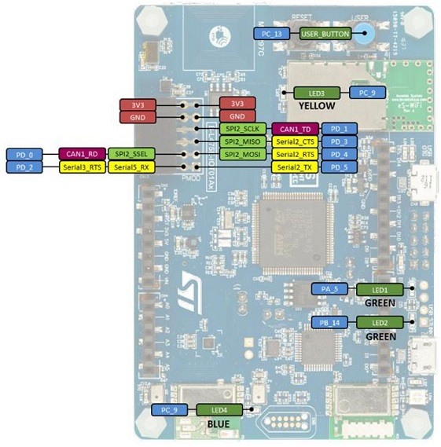
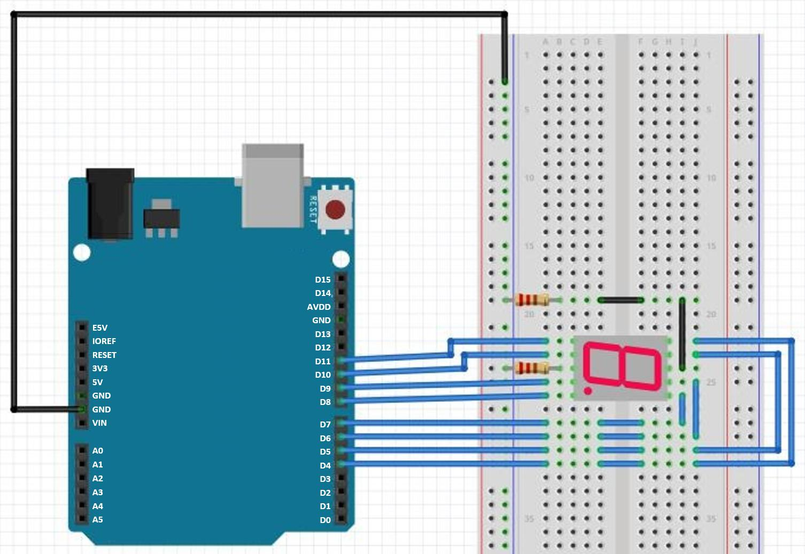
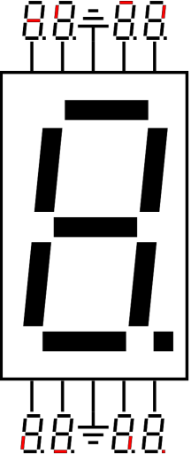
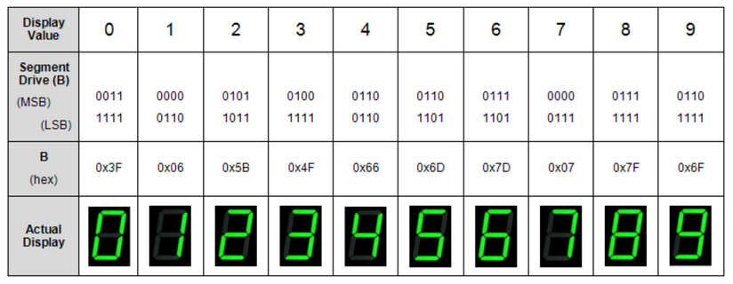

Contents
The goal of this lab is to learn:
- Digital input and output of mbed
- Basic functions of mbed
1 Lab Due
Feb. 23, 2022
2 Lab Introduction
The basic control of a microcontroller board is through digital input and output I/O pins. In the Mbed library, there are two interfaces APIs for digital I/O: The DigitalIn interface is used to read the value of a digital input pin, while the DigitalOut interface is used to configure and control a digital output pin.
3 Equipment list
- B_L4S5I_IOT01A * 1
- Bread board * 1
- Seven segment display * 1
- Wire * 20
- 220 Ohm Resistor * 2
4 Lab Description
4.1 Lecture Note
- Chapter 3: Digital Input and Output ch3_digital.pdf
4.2 Blinky LED
4.2.1 Create a Mbed Program
Create a new program.
Open the File menu and select New Program....
Select "empty Mbed OS program" under MBED OS 6 Enter 2_1_Blinky_LED for Program name. Check "Make this the active program" (default). Under "Mbed OS Location", check "Link to an existing shared Mbed OS instance" and select "~/Mbed Programs/mbed01/mbed-os/". This will reuse Mbed OS in mbed01/. Click "Add Program".
Copy the following codes into main.cpp.
1#include "mbed.h" 2 3DigitalOut myled(LED1); 4 5int main() 6{ 7 // check that myled object is initialized and connected to a pin 8 if (myled.is_connected()) { 9 printf("myled is initialized and connected!\n\r"); 10 } 11 12 // Blink LED 13 while (1) { 14 myled = 1; // set LED1 pin to high 15 printf("myled = %d \n\r", (uint8_t)myled); 16 ThisThread::sleep_for(500ms); 17 18 myled.write(0); // set LED1 pin to low 19 printf("myled = %d \n\r", myled.read()); 20 ThisThread::sleep_for(500ms); 21 } 22}
DigitalOut is a class which is used for setting the state of a pin like LED1 and so on. Take a look at the specific pin that we can utilize on the B_L4S5I_IOT01A.
DigitalOut myled(LED1);
Compile and test the program
4.2.2 Monitor Device Output with CoolTerm
After the Mbed program is flashed on the device, the program can run independently from Mbed Studio. We will reset and run the program without Mbed Studio and observe the output from the device with CoolTerm.
- Download CoolTerm from https://freeware.the-meiers.org
- Extract the contents from the archive.
- Double-click to run CoolTerm
- Click "Options" to select the USB port for B_L4S5I_IOT01A. For example, in MAC OS, it is usbmodem14303. In Windows, it is COM3. Click OK.
- Click "Connect". The status icons will become active.
- Press the reset button on the B_L4S5I_IOT01A and the program will start.
- The CoolTerm will show the output.
4.3 Seven-segment Display
In this part, we will use B_L4S5I_IOT01A digital output to drive the Seven_Segment_Display. The display will be mounted on a breadboard to connect to B_L4S5I_IOT01A:
Create a new program.
Open the File menu and select New Program....
Select "empty Mbed OS program" under MBED OS 6 Enter 2_2_Seven_Segment_Display for Program name. Check "Make this the active program" (default). Under "Mbed OS Location", check "Link to an existing shared Mbed OS instance" and select "~/Mbed Programs/mbed01/mbed-os/". This will reuse Mbed OS in mbed01/. Click "Add Program".
Copy the following codes into main.cpp.
1#include "mbed.h" 2 3BusOut display(D6, D7, D9, D10, D11, D5, D4, D8); 4char table[10] = {0x3F, 0x06, 0x5B, 0x4F, 0x66, 0x6D, 0x7D, 0x07, 0x7F, 0x6F}; 5 6int main(){ 7 while(1){ 8 for (int i = 0; i<10; i = i+1){ 9 display = table[i]; 10 ThisThread::sleep_for(1s); 11 } 12 } 13}
Here we use BusOut instead of DigitalOut. BusOut is an object used for setting the state of a collection of pins. We use BusOut to avoid too many declarations. Notice that the order of input arguments is shown as below:
BusOut (PinName p0, PinName p1,... etc);
Because the segments are connected in this sequence (MSB) dp g f e d c b a (LSB) to form a byte, we could declare an array to store the corresponding hexidecimal value of 1 to 9 on the 7-segment. About the hexidecimal value, please refer to following table
 Compile and test the program
4.4 Switch Button
The DigitalIn BUTTON1 is a button on the B_L4S5I_IOT01A. We will use this button to control the led.
Create a new program.
Open the File menu and select New Program....
Select "empty Mbed OS program" under MBED OS 6 Enter 2_3_Switch_Button for Program name. Check "Make this the active program" (default). Under "Mbed OS Location", check "Link to an existing shared Mbed OS instance" and select "~/Mbed Programs/mbed01/mbed-os/". This will reuse Mbed OS in mbed01/. Click "Add Program".
Copy the following codes into main.cpp.
1#include "mbed.h" 2 3DigitalIn mypin(BUTTON1); 4DigitalOut myled(LED1); 5 6int main() 7{ 8 // check mypin object is initialized and connected to a pin 9 if (mypin.is_connected()) 10 { 11 printf("mypin is connected and initialized! \n\r"); 12 } 13 14 // Optional: set mode as PullUp/PullDown/PullNone/OpenDrain 15 mypin.mode(PullNone); 16 17 // press the button and see the console / led change 18 while (1) 19 { 20 printf("mypin has value : %d \n\r", mypin.read()); 21 myled = mypin; // toggle led based on value of button 22 ThisThread::sleep_for(250ms); 23 } 24}
DigitalIn is a class which used for reading the state of a pin.
DigitalIn mypin(BUTTON1);
Because "BUTTON1" is wired to ground, we will get "0" when the button is pushed. Also, note that in the above code, we set the mode of DigitalIn with "PullNone" without adding extra pull up/pull down circuits. Since the default state of the pin is 1, when we push down the button, we get "0"s. We will get the same results, if the mode is "PullUp". If we set the mode to "PullDown", you will see that the initial state of the pin becomes "0". Of course, in this case, when we push down the button, we still get "0" at output.
Compile and test the program
5 Demo and Checkpoints
- You need to know how to control the digital output.
- You need to know how to read the digital input.
- You need to know about how to display from 0 to 9 in order on a 7-segment display sequentially.
- Show your git remote repository.
- Demo a 7-segment displaying from 0 to 9 in sequential order.